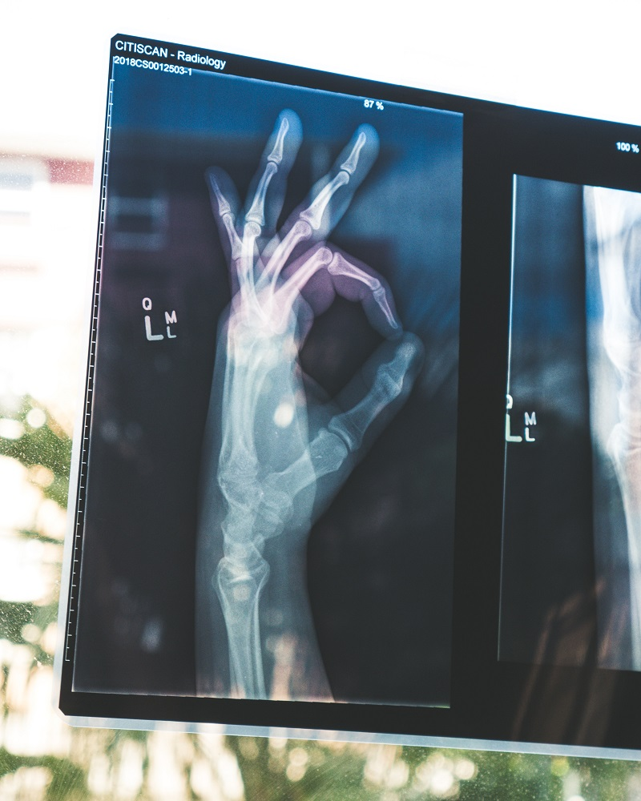

My e-Portfolio
Network and Information Security Management
Learning outcomes
Identify and analyse security risks and vulnerabilities in IT network systems and determine appropriate methodologies, tools and techniques to manage and/or solve them.
Design and critically appraise computer programs and systems to produce solutions that help manage and audit risk and security issues.
Gather and synthesise information from multiple sources (including internet security alerts & warning sites) to aid in the systematic analysis of security breaches and issues.
Articulate the legal, social, ethical and professional issues faced by information security professionals.
Unit 2
Real World Issues and Implications of Information Security Threats and Vulnerabilities
Continue reading
Unit 3
Network Fundamentals
Continue reading
Unit 4
Basic Network Investigation Using Standard Tools
Continue reading
Unit 5
Network Tools and Components
Continue reading
Unit 6
An Evaluation of Commonly Utilised Network Scanning and Penetration Testing Tools
Continue reading
Placeholder
Unit 7
Risks and Standards
Continue reading
Unit 8
How to Evaluate and Apply Applicable Security Standards
Continue reading
Unit 9
System Logging and Forensics
Continue reading
Unit 10
Analysing and Mitigating Security Breaches
Continue reading
Unit 11
Future Trends, Technologies and Challenges for the Information Security Industry
Continue reading
Unit 12